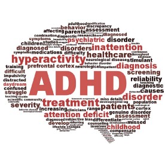

ADHD (Attention Deficit/Hyperactivity Disorder) is a common neurological and behavioural disorder where a person mainly exhibits inattentiveness, impulsiveness, and hyperactivity. Other behavioural traits are over activeness, frequent disruptiveness, aggressiveness and uncontrollability.
Types of ADHD
- Combined type.
- Predominantly inattentive type .
- Predominantly hyperactive-impulsive type.
What causes ADHD?
Researchers say that several things may lead to it, including:
- Heredity: Research shows that parents and siblings of a person with ADHD are likely to have ADHD themselves.
- Chemical imbalance: People with ADHD may have a chemical imbalance where chemicals may not work properly.
- Brain function: Certain areas of the brain may be smaller in people with ADHD, whereas other areas may be larger.
- Pregnancy problems: Poor nutrition, infections, Consumption of alcohol or drugs by the mother during pregnancy, premature birth, or low birthweight.
- Toxins: Women exposed to toxins such as lead, PCBs, or pesticides may affect a child’s brain development during a pregnancy.
- Epilepsy
- Brain injury/disorder: Damage caused either in womb or after a severe head injury.
ADHD Symptoms
Symptoms of ADHD can appear between the age of 3 to 6 and can continue through adulthood. These symptoms can be missed entirely in well-behaved children or misunderstood for disciplinary problems, leading to a delay in diagnosis.
Symptoms of ADHD in children (teens and toddlers) :
- Difficulty in concentrating and diminished focus.
- Easily bored.
- Difficulty in organizing or completing tasks.
- Floundering.
- Extreme Impatience.
- Forgetfulness.
- Severe behaviours showing difficulty being still and/or quiet.
In addition to the symptoms that occur in kids, adults may exhibit one or more of the following symptoms of ADHD :
- Difficulty in conversation.
- Overwhelming emotional and physical restlessness.
- Frequent mood swings and anxiety.
- Low tolerance of people, situations, and surroundings.
- Unstable relationships.
- Increased risk for addiction.
The most common treatment of ADHD today is using Amphetamine, a central nervous system stimulant that sometimes leads to suicidal thoughts and personality changes. Amphetamine can cause anxiety, insomnia, nervousness, increased blood pressure, agitation, vomiting and even psychosis. Its side effects are tremors, high blood pressure, fast or irregular heartbeats, hallucinations, muscle twitches and extreme mood swings which explains the reason people seek natural remedies for ADHD that are effective and without the fear of side effects.
How to treat ADHD using natural remedies
Food
The best way is to “Eat Real Food”, as the modern lifestyle involves stress, air-pollution, chemicals in food and water that further demands increased nutritional needs. While our needs have increased, the diets have become less nutritious as fruits and vegetables are now grown in depleted soils.
Top Foods for ADHD
- It is best to eat Additive-free, unprocessed whole foods.
- Foods High in B-Vitamins help maintain a healthy nervous system.
- Tryptophan in poultry is an essential amino acid that helps the body to synthesize proteins and produce serotonin which plays an important role in sleep, inflammation, and emotional moods
- Eating Breakfast helps the body to regulate blood sugar and stabilize hormone fluctuations.
- Wild-Caught Salmon that is packed with omega 3 fatty acids and is rich in vitamin B-6.
- Green Oats
How to eat right:
- By consuming protein rich foods such as fish, egg, soy products, dairy products, nuts and beans. Protein promotes dopamine production which is needed for concentration.
- By consuming carbohydrate rich foods that contain less sugar and more fiber for e.g. whole grains that would help lower the level of blood sugar, thus improves function of brain.
- By consuming foods rich in magnesium such as spinach, pumpkin and sunflower seeds, soybeans, black beans and cashews that help improve span of attention, reduce mental confusion and irritability,.
- By consuming more foods containing vitamin B6 in order to decrease irritability like bananas, avocados, prunes and nuts.
- By consuming foods rich in zinc like oysters, cheese, sesame seeds and peanuts.
- Keeping artificial colors and sweeteners, preservatives or flavoring at bay as these foods might trigger hyperactive behavior and disable learning.
Foods to Avoid in ADHD
- Sugar
- Chocolate
- Gluton
- Conventional Dairy
- Food Coloring and Dyes
- Caffeine
- MSG and HPV
- Nitrites
- Artificial sweeteners
- Soy
- Personal Food Sensitivities/Allergens
Herbal remedies for ADHD
A number of herbal treatments may treat ADHD. These include:
- French Maritime pine bark extract
- Ginseng
- Ningdong
- Bacopa
- Ginkgo Biloba
- St. John’s Wort
- Chamomile
How to use:
- Add a teaspoon of dried chamomile into a cup of warm water for about 5 minutes.
- Strain it and add some honey.
- Consume it everyday before going to bed.
Essential oils
Fish Oil
Fish oil provides polyunsaturated fatty acids that improves the psychiatric and neurodevelopmental disorders like ADHD. It contains high level of omega-6 fatty acids (DHA) or omega-3 fatty acids (EPA) that helps for concentration and memory .
How to use:
- Consulting doctor for dosage of fish oil supplement.
- Consuming foods rich omega-3 fatty acids such as trout, sardines, salmon and seeds.
Home remedies and Natural treatments
Some home remedies :
- Omega-3 supplements.
- Regular Physical Exercise & Outdoor Playtime
- Find Success Opportunities
- Establish Healthy Sleep Patterns
- Stay connected to friends.
- Spend time in a support group for depression
- Treat yourself well
- Diet and Nutrition check
- Practice Yoga and Tai Chi
- Exercise Daily
- Show Affection (and Ask for It)
- Create Friendly Organizational System
- Avoid Mouth Breathing
- Lifestyle Changes for Adults with ADHD
- Create an Organizational System That Works for You
- Use Technology to Your Advantage
- Message
How to use:
- Take some oil on hands.
- Warm up the oil by rubbing hands.
- Massage the oil onto the body.
- Leave it to soak into the body, then clean off the residue.
- Repeat 2 to 3 times a week.
Natural ADHD Supplements
Taking the right supplements can bring relief easily and faster, especially when used properly.
- Omega-3 Essential Fatty Acids
- Phosphatidylserine
- Tryptophan
- Cognizin

Other conventional ways to treat (if any)
- Homeopathy: The homeopathic medicines which have been found helpful for ADHD are Stramonium, Cina and Hyoscyamus Niger. Stramonium is specifically for the patients who suffered from post-traumatic stress disorder; patients who are physically aggressive get benefitted by Cina; and people with manic symptoms respond to Hyoscyamus niger.
Conclusion
ADHD symptoms may improve over time as a person ages. Initially, hyperactivity-impulsivity are the most dominant symptoms but as a child reaches elementary school, the symptoms for inattention may become more prominent as the child struggles academically. In adulthood, hyperactivity decreases and may occur as feeling of restlessness, but inattention and impulsivity remains. Naturally available treatments can help reduce symptoms and improve functioning of body.